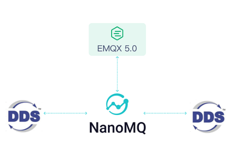
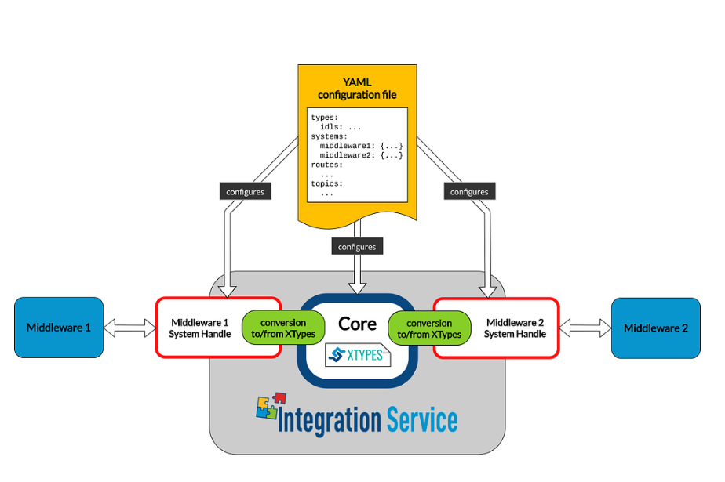
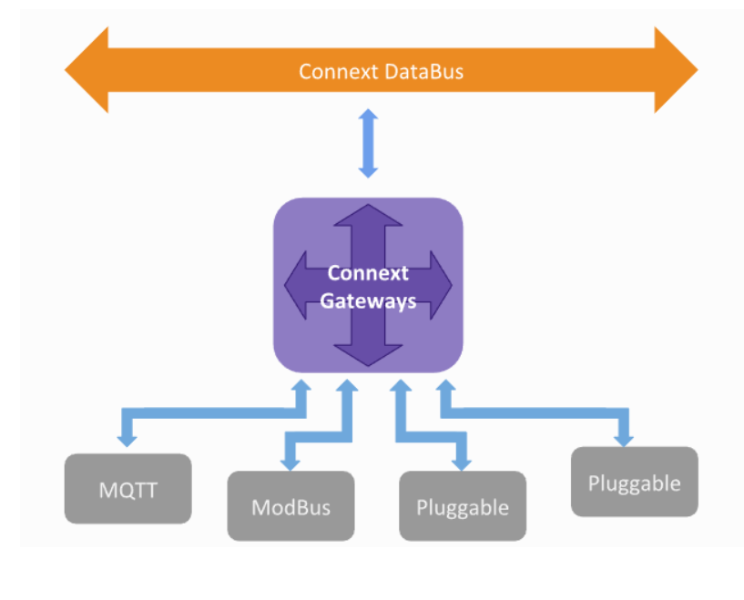

2. List Gateway
Eksplorasi solusi bridging antara jaringan DDS dan ekosistem Web.
Mengatasi Batasan UDP di Web
Di era sistem terdistribusi modern, komunikasi real-time menjadi fondasi penting dalam berbagai aplikasi, mulai dari radar yang memantau pergerakan objek secara kontinu, sistem tracking kendaraan, hingga ekosistem IoT yang mengandalkan aliran data tanpa jeda. Teknologi seperti DDS memungkinkan pertukaran data yang cepat, efisien, dan bersifat publish-subscribe tanpa perlu permintaan berulang.
Namun, ketika kebutuhan ini bergeser ke ranah web, muncul sebuah batasan mendasar dimana browser tidak dirancang untuk berkomunikasi menggunakan protokol UDP secara langsung. Keterbatasan ini menciptakan jurang antara sistem backend yang real-time dan frontend berbasis web, sehingga diperlukan pendekatan baru untuk menjembatani keduanya.
Untuk menjembatani perbedaan ini, digunakan sebuah gateway yang berfungsi sebagai penghubung antara sistem backend seperti OpenDDS yang berjalan di atas UDP, dengan aplikasi web yang hanya mendukung TCP/WebSocket. Gateway akan menerima data dari DDS, lalu meneruskannya ke browser dengan protokol yang kompatibel.
Di sisi lain, WebDDS hadir untuk membawa konsep DDS ke lingkungan web. Dengan memanfaatkan WebSocket, WebDDS memungkinkan mekanisme publish-subscribe tetap berjalan di browser secara real-time. Kombinasi gateway dan WebDDS inilah yang menjadi solusi utama untuk mengatasi keterbatasan UDP di web.
Terdapat berbagai jenis gateway yang dapat digunakan, masing-masing dengan pendekatan, kompleksitas, serta tingkat integrasi yang berbeda terhadap ekosistem DDS:
1. NanoMQ DDSProxy

Gambar: Arsitektur Bridging NanoMQ MQTT-DDS
NanoMQ DDSProxy adalah fitur integrasi di dalam broker NanoMQ yang berfungsi sebagai gateway komunikasi dua arah antara protokol MQTT dan DDS (Data Distribution Service).
NanoMQ memperkenalkan plugin DDS Proxy yang dikembangkan berdasarkan Cyclone DDS. Plugin ini dapat mengkonversi pesan DDS menjadi pesan MQTT dan menjembataninya ke cloud, memungkinkan pengguna untuk mengirimkan data DDS lintas domain melalui NanoMQ dan berkomunikasi dengan cloud melalui MQTT.
Syarat Penggunaan
- Dependensi DDS: Sebelum menginisiasi gateway DDS, perlu untuk menginstal CycloneDDS dan Iceoryx. CycloneDDS merupakan dependensi inti, sedangkan Iceoryx diperlukan untuk komunikasi memori bersama.
- Kompilasi NanoMQ: NanoMQ harus di-build dari sumber (source code) dengan mengaktifkan flag DDS.
- File Konfigurasi: Memerlukan file
namomq.confyang dikonfigurasi untuk menentukan pemetaan (mapping) antara topik MQTT dan tipe data DDS.
Keunggulan
- Jembatan MQTT: Menjembatani pesan dari edge ke berbagai cloud global secara langsung.
- Mesin Aturan: Menggunakan mesin aturan berbasis SQL (terintegrasi eKuiper) untuk fleksibilitas data di perangkat ujung.
- Ketahanan Pesan: Fitur ketahanan data bawaan yang otomatis melanjutkan pengunggahan saat koneksi pulih.
- Kemudahan Integrasi: WebHook berbasis event dan API HTTP yang ramah EdgeOps.
- Protokol Multi-Bahasa: Mendukung ZeroMQ, nanomsg, NNG, dan WebSocket.
Dokumentasi & Contoh Penggunaan
- Dokumentasi resmi NanoMQ: nanomq.io
- Source Code: GitHub NanoMQ (direktori
nanomq/plugins). - Referensi Core DDS: GitHub CycloneDDS.
2. eProsima Integration Service

Gambar: Modular System Handle eProsima
eProsima Integration Service adalah solusi gateway serbaguna yang memungkinkan komunikasi antar berbagai protokol komunikasi yang berbeda. Fokus utamanya adalah menjembatani Fast DDS (implementasi DDS standar dari eProsima) dengan protokol lain seperti MQTT, ROS 2, WebSocket, atau bahkan sistem legacy.
Integration Service menggunakan inti dari Fast DDS untuk memfasilitasi pertukaran data antar domain. Dengan menggunakan gateway ini, pengguna dapat mengintegrasikan sistem robotika atau industri yang berbasis DDS secara transparan.
Syarat Penggunaan
- Fast DDS & Fast CDR: Pengguna harus menginstal eProsima Fast DDS dan Fast CDR (Serialization library) sebagai dependensi inti.
- System Handles: Diperlukan instalasi plugin khusus (System Handles) untuk setiap protokol (misal: FastDDS-SH dan MQTT-SH).
- YAML Configuration: Menyusun file YAML untuk pemetaan topik, tipe data (IDL), serta arah komunikasi (Ingress/Egress).
Keunggulan
- Interoperabilitas Tanpa Batas: Pertukaran data transparan antar protokol yang berbeda.
- Arsitektur Modular: Konsep System Handle memudahkan penambahan/penghapusan dukungan protokol tanpa mengganggu modul lain.
- Dukungan Tipe Data Dinamis: Memungkinkan pemrosesan data tanpa kompilasi ulang saat ada perubahan struktur pesan.
- Performa Standar Industri: Latensi sangat rendah dan keandalan tinggi (middleware default ROS 2).
- Skalabilitas Cloud & LAN: Mendukung integrasi dari edge ke cloud melalui protokol ramah internet (WAN/MQTT).
Dokumentasi & Contoh Penggunaan
- Dokumentasi resmi: integration-service.docs.eprosima.com
- Source Code: GitHub eProsima Integration Service.
- Web Resmi: eprosima.com
3. RTI Web Integration Service

Gambar: Arsitektur RESTful RTI Web Integration
RTI Web Integration Service adalah aplikasi gateway siap pakai yang dirancang untuk menjembatani komunikasi antara aplikasi berbasis web dengan jaringan DDS (Data Distribution Service).
Layanan ini memungkinkan pengembang web untuk berinteraksi dengan sistem real-time yang kompleks tanpa perlu memahami detail protokol DDS secara mendalam. Bertindak sebagai jembatan yang memetakan operasi HTTP (POST, GET, PUT, DELETE) ke dalam operasi DDS (Write, Read, Take, Dispose).
Syarat Penggunaan
- RTI Connext DDS: Memerlukan instalasi RTI Connext DDS (versi Pro) karena layanan ini merupakan bagian dari ekosistem RTI.
- Lisensi RTI: Diperlukan lisensi aktif untuk menjalankan service ini.
- Web Server/Container: Dapat dijalankan sebagai aplikasi mandiri (standalone) atau di dalam container untuk memfasilitasi akses endpoint REST.
- Konfigurasi XML: Mendefinisikan file XML untuk mengatur pemetaan antara sumber daya URL dengan topik-topik DDS.
Keunggulan
- Aksesibilitas Standar: Mengakses data DDS melalui antarmuka RESTful standar.
- Konversi Format Otomatis: Menerjemahkan data JSON/XML ke representasi biner DDS secara otomatis.
- Keamanan Terintegrasi: Mendukung HTTPS/TLS dan mekanisme autentikasi web standar.
- Tanpa Kode (Low-Code): Membangun jembatan komunikasi cukup dengan konfigurasi XML.
- Skalabilitas Cloud: Mendukung arsitektur mikroservis untuk kontrol sistem jarak jauh.
Dokumentasi & Contoh Penggunaan
- Dokumentasi Resmi RTI: community.rti.com
- Contoh (GitHub): GitHub RTI-Community/web-integration-service-examples
- Web Resmi: rti.com
4. Custom Bridge Gateway (Node.js)
OpenDDS Node.js Gateway merupakan pendekatan kustom yang memungkinkan aplikasi berbasis Node.js untuk
berinteraksi dengan domain DDS. Integrasi ini dilakukan melalui modul node-opendds, yang
berfungsi sebagai binding antara runtime Node.js dan library OpenDDS berbasis C++.
Dalam proyek ini, gateway menggunakan pendekatan Hybrid Mode: menggunakan REST API (Express) untuk operasi Write (Publish Command) dan WebSocket (ws) untuk operasi Read (Subscribe Data Radar) secara real-time.
Syarat Penggunaan
- Instalasi OpenDDS: Menginstal OpenDDS beserta dependensinya seperti ACE/TAO di sistem host.
- Konfigurasi Environment: Mengatur variabel lingkungan seperti
DDS_ROOTdanACE_ROOT. - C++ Compiler: Diperlukan compiler (gcc/g++) untuk membangun native binding.
- Definisi IDL: Menentukan struktur data dalam file IDL untuk proses serialisasi biner.
Keunggulan
- Dukungan WebSocket Real-time: Ideal untuk streaming data radar dengan latensi sangat rendah ke frontend React.
- Kontrol Penuh (Customizable): Pengembang dapat menentukan logika bridging sendiri, termasuk filtrasi data sebelum dikirim ke web.
- Efisiensi Biner: Memanfaatkan
opendds.load()untuk memuat library.sohasil kompilasi IDL secara langsung.
Catatan Penting (Batasan)
- Modul
node-openddsmerupakan kontribusi komunitas, bukan bagian inti resmi OpenDDS. - Dokumentasi masih terbatas dan memerlukan eksplorasi source code secara mandiri.
- Gateway ini bertindak sebagai Application-level Bridge, di mana browser tidak menjadi DDS Participant secara langsung.
Dokumentasi & Contoh Penggunaan
- Dokumentasi Resmi OpenDDS: opendds.readthedocs.io
- Source Code Modul: GitHub OpenDDS/node-opendds
- Contoh Implementasi: GitHub OpenDDS/DeveloperResources